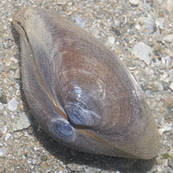

|
|
| bivalves text index | photo index |
| Phylum Mollusca > Class Bivalvia |
| Mactra
clams Family Mactridae updated May 2020 Where seen? The Big brown matra clam that belongs to this family is often seen on our northern shores. What are surf clams? Surf clams belong to the Family Mactridae. They are also called Trough clams. Features: About 6cm. The two-part shells are thick and smooth. They are active burrowers of sandy and muddy bottoms. Human uses: Some are harvested commercially, but are of secondary importance. They are, however, more regularly eaten by coastal dwellers. |
 Changi, Jun 06 |
 Pulau Sekudu, May 12 |
 |
| Family
Mactridae recorded for Singapore from Tan Siong Kiat and Henrietta P. M. Woo, 2010 Preliminary Checklist of The Molluscs of Singapore. ^from WORMS
|
|
Links
References
|